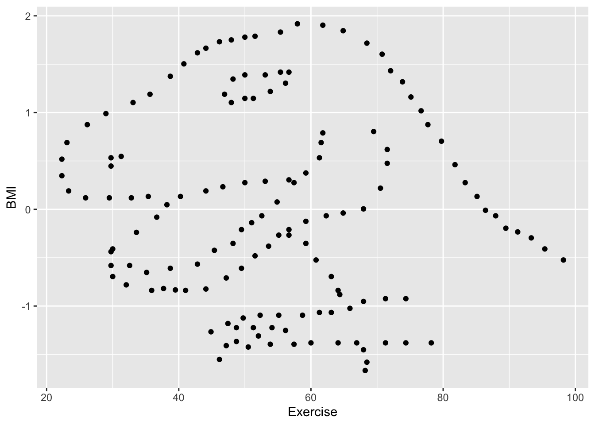
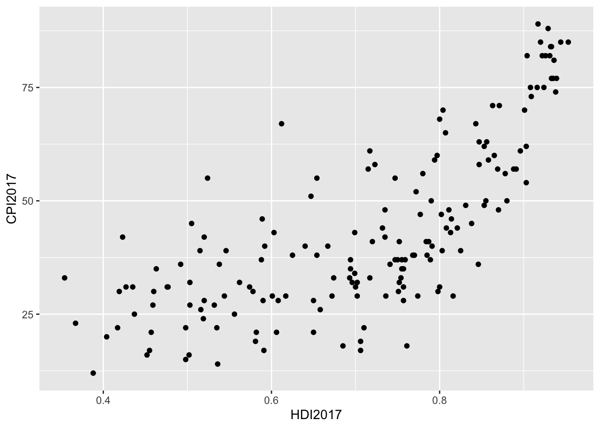
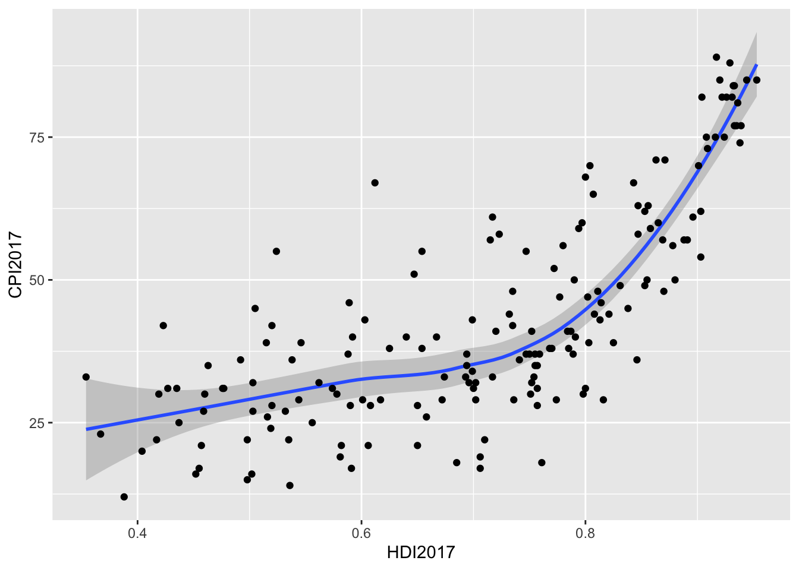
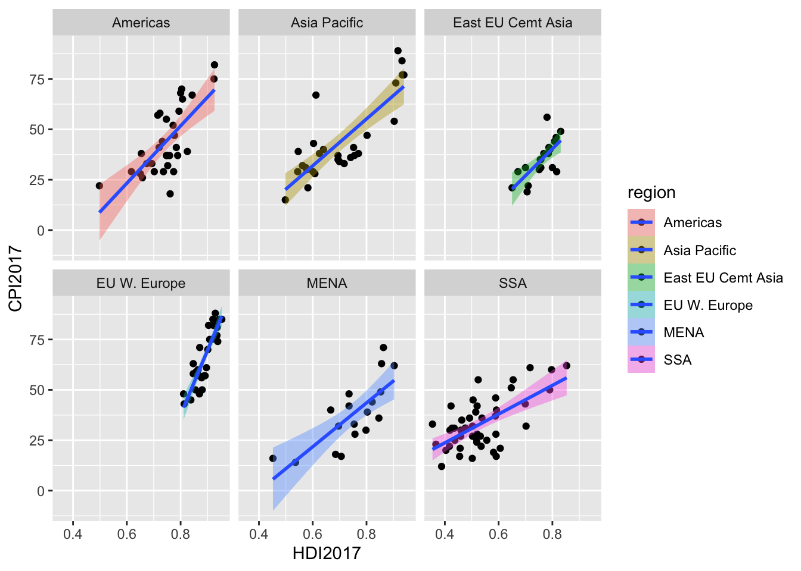
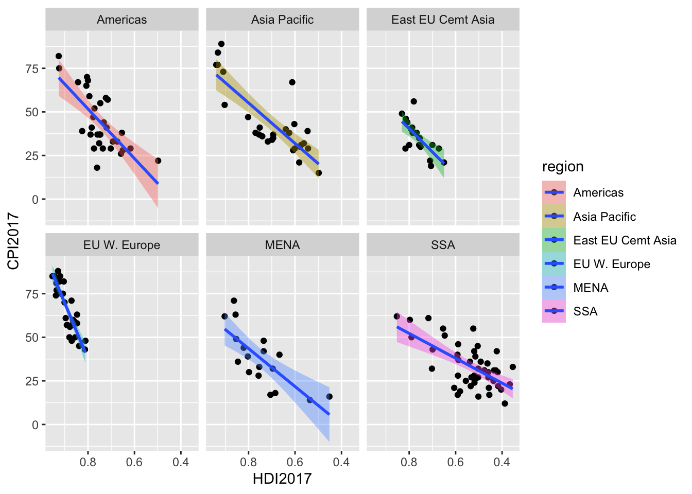
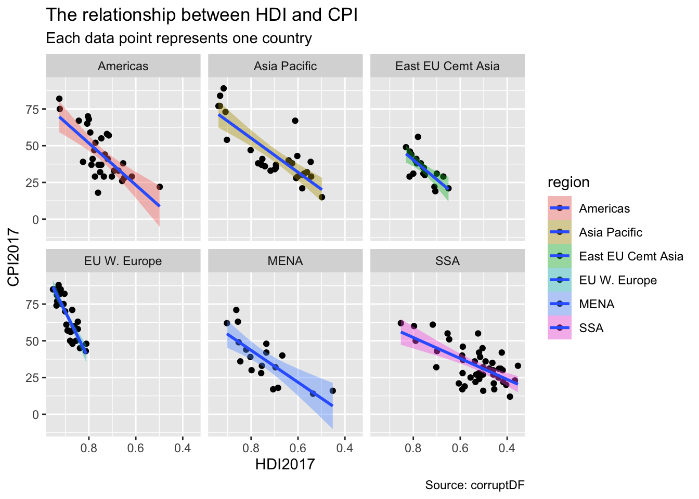
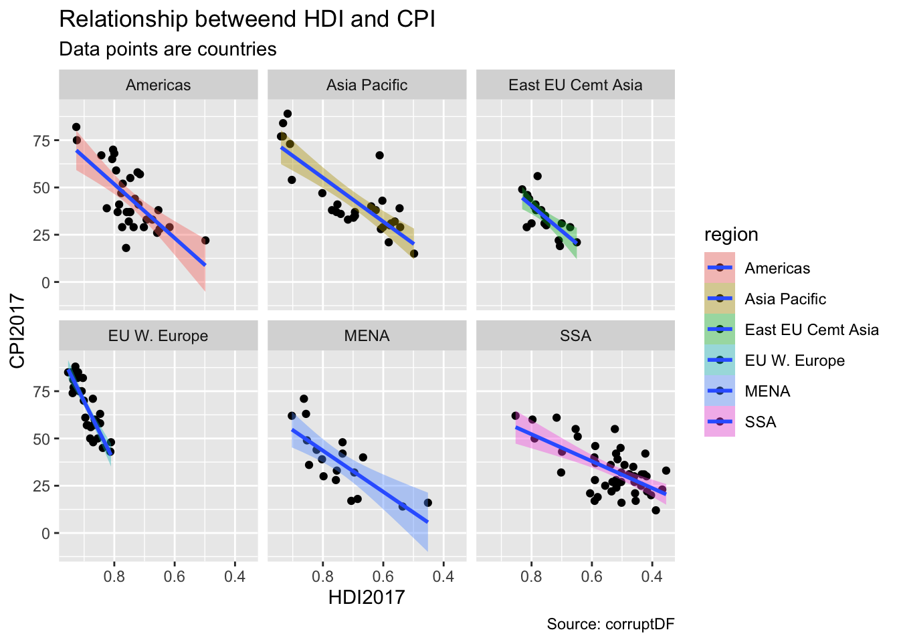

library(tidyr)
library(tidyverse)MD Chapters 1-3
Question 1
exercise_data <- read_csv("https://raw.githubusercontent.com/vaiseys/dav-course/main/Data/visualize_data.csv")New names:
Rows: 142 Columns: 4
── Column specification
──────────────────────────────────────────────────────── Delimiter: "," dbl
(4): ...1, ...2, Exercise, BMI
ℹ Use `spec()` to retrieve the full column specification for this data. ℹ
Specify the column types or set `show_col_types = FALSE` to quiet this message.
• `` -> `...1`
• `...1` -> `...2`glimpse(exercise_data)Rows: 142
Columns: 4
$ ...1 <dbl> 1, 2, 3, 4, 5, 6, 7, 8, 9, 10, 11, 12, 13, 14, 15, 16, 17, 18…
$ ...2 <dbl> 1, 2, 3, 4, 5, 6, 7, 8, 9, 10, 11, 12, 13, 14, 15, 16, 17, 18…
$ Exercise <dbl> 55.3846, 51.5385, 46.1538, 42.8205, 40.7692, 38.7179, 35.6410…
$ BMI <dbl> 1.8320590, 1.7892194, 1.7321050, 1.6178724, 1.5036362, 1.3751…I expect there to by a negative relationship between exercise and BMI. When exercise increases, BMI should decrease and visa versa.
cor(exercise_data$Exercise, exercise_data$BMI)[1] -0.06447185This shows that there is a negative correlation proving our initial hypothesis.
Now, lets visualize our data using a scatterplot.
ggplot(data = exercise_data, mapping = aes(x = Exercise, y = BMI)) +
geom_point()
I was tricked! I see that the data points make a picture of a dinosaur.
This shows the importance of always looking at the data even if the original correlation makes sense.
Question 2
I first installed “causact” in the console using the fucntion install.packages(“causact”).
library(causact)WARNING: The 'r-causact' Conda environment does not exist. To use the 'dag_numpyro()' function, you need to set up the 'r-causact' environment. Run install_causact_deps() when ready to set up the 'r-causact' environment.
Attaching package: 'causact'The following objects are masked from 'package:stats':
binomial, poissonThe following objects are masked from 'package:base':
beta, gammaglimpse(corruptDF)Rows: 174
Columns: 7
$ country <chr> "Afghanistan", "Albania", "Algeria", "Angola", "Argentina"…
$ region <chr> "Asia Pacific", "East EU Cemt Asia", "MENA", "SSA", "Ameri…
$ countryCode <chr> "AFG", "ALB", "DZA", "AGO", "ARG", "ARM", "AUS", "AUT", "A…
$ regionCode <chr> "AP", "ECA", "MENA", "SSA", "AME", "ECA", "AP", "WE/EU", "…
$ population <int> 35530081, 2873457, 41318142, 29784193, 44271041, 2930450, …
$ CPI2017 <int> 15, 38, 33, 19, 39, 35, 77, 75, 31, 65, 36, 28, 68, 44, 75…
$ HDI2017 <dbl> 0.498, 0.785, 0.754, 0.581, 0.825, 0.755, 0.939, 0.908, 0.…?corruptDF
view(corruptDF)CPI2017 is The Corruption Perceptions Index score for the year 2017. This index measures the perceived level of corruption of the public sector on a scale of 0-100. 0 means that a country is highly corrupt whereas 100 means that a country is not corrupt.
HDI2017 is the Human Development Index score for 2017. This index measures the achievement of human development across countries. It averages the simple average of a nation’s longevity, education, and income.
Question 3
Lets compare the relationship between HDI and CPI by creating a scatterplot.
ggplot(data = corruptDF, mapping = aes(x = HDI2017, y = CPI2017)) +
geom_point()
The graph shows that HDI and CPI have a positive relationship in 2017.
Question 4
ggplot(data = corruptDF, mapping = aes(x = HDI2017, y = CPI2017)) + geom_smooth() +
geom_point()`geom_smooth()` using method = 'loess' and formula = 'y ~ x'
Question 5
Lets explore this relationship by region. We can do this by using the “facet” function.
ggplot(data = corruptDF, mapping = aes(x = HDI2017, y = CPI2017, fill = region)) + geom_point() + geom_smooth(method = "lm") + facet_wrap(~region)`geom_smooth()` using formula = 'y ~ x'
The trends of patterns are clear but some of the points/data seems cluttered. In order to make this more legible, we can reverse the scale of the x-axis.
Question 6
I reversed the scale of the x-axis by using “scale_x_reverse” function.
ggplot(data = corruptDF, mapping = aes(x = HDI2017, y = CPI2017, fill = region)) + geom_point() + geom_smooth(method = "lm") + facet_wrap(~region) + scale_x_reverse()`geom_smooth()` using formula = 'y ~ x'
Question 7
ggplot(data = corruptDF, mapping = aes(x = HDI2017, y = CPI2017, fill = region)) + geom_point() + geom_smooth(method = "lm") + facet_wrap(~region) + scale_x_reverse() + labs(title = "The relationship between HDI and CPI", subtitle = "Each data point represents one country", caption = "Source: corruptDF")`geom_smooth()` using formula = 'y ~ x'
I was able to add a title, subtitle, and caption to the plot by using the “labs” function.
Question 8
ggplot(data = corruptDF, mapping = aes(x = HDI2017, y = CPI2017, fill = region)) + geom_point() + geom_smooth(method = "lm") + facet_wrap(~region) + scale_x_reverse() + labs(title = "Relationship betweend HDI and CPI", subtitle = "Data points are countries", caption = "Source: corruptDF")`geom_smooth()` using formula = 'y ~ x'
ggsave("HDI:CDI.pdf")Saving 7 x 5 in image
`geom_smooth()` using formula = 'y ~ x'In order to save our data/plot, we can use the “ggsave” function